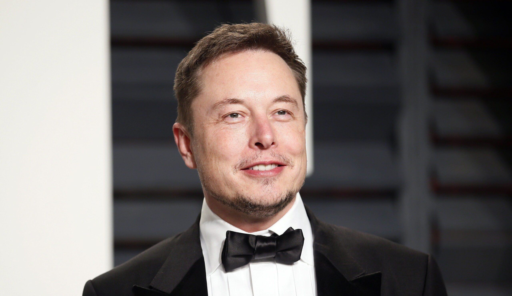

Ілон Рів Маск - видатний підприємець, засновник компаній SpaceX та Tesla. Він народився в Південній Африці і з дитинства захоплювався програмуванням та технологіями.
Коли щось є достатньо важливим, ви робите це, навіть якщо шанси не на вашу користь.
- Ілон Маск